System Security
In this chapter, we will take a deep dive into the security elements inside the system layer. Contrary to the application security layer (discussed in Chapter 5), which has a direct impact on end-users’ experiences within OneStream, the system security layer is almost exclusively limited to your OneStream administrators and perhaps a small group of other users (e.g., IT users).
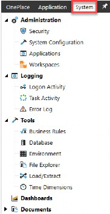
The items we will cover in this chapter, while important for overall security, will have a limited impact on end-users. It is safe to say that most, if not all, end-users will never need to navigate to the System tab shown in Figure 6.1. This chapter, therefore, focuses on concepts important to OneStream administrators and limited IT individuals who will need to interact with the System tab.
This tab is almost exclusively limited to your administrators.
In rare cases, you may grant your end-users the ability to navigate to this tab for a very limited number of use cases.
Figure 6.1
System Security
System Database
As noted in prior chapters, there is one system database (aka the framework) per environment. All system-specific tables reside in that database.
You can see this by going to the System > Tools > Database page within an environment.
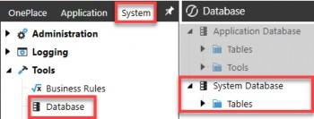
Figure 6.2
On this Database page, you will see that you have Application Database tables, and directly below, you have your System Database tables. These two databases contain all the tables necessary to support your application and system security. In this chapter, we will focus on the system database.
If you were to log out of a particular application, (e.g., OneStream Production application), and log into another application within the same environment, (e.g., OneStream Development), you would notice that the System Database tables remain constant on this Database page.
This speaks to what we touched upon in Chapter 2; your framework database, aka the system database, applies to an entire environment. There is only one framework database per environment. If you were to log out of a particular environment (e.g., PRD1) and into another environment (e.g., DEV1), it is only then that you would see a different framework database.
In Chapter 8, we will cover how to migrate your security framework from one environment to another. This is an important process as most companies need to copy applications between environments, and in doing so, they will also need to ensure that as they copy applications (which have security group assignments), those application copies (application databases) retain their security groups (framework database).
System Security
System Roles & Pages
Similar to how we have application security roles and application user interface roles (that we learned about in the prior chapter), there are also a handful of out-of-the-box system security roles and system user interface roles. Let us review all of these in detail.
These can be found on the System > Administration > Security > System Security Roles page, as seen in Figure 6.3. There are 18 out-of-the-box System Security Roles and 16 System User Interface Roles.
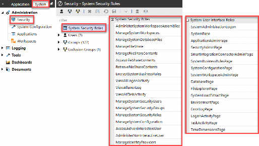
Figure 6.3
System Security › System Roles & Pages
System Security Roles
System security roles are standard (aka out-of-the-box) roles that exist in every customer environment, allowing you to manage different aspects of a OneStream environment. As we learned in the last chapter, these roles answer the question “Can I do X?” across an environment.
Some of these roles, when granted, will require additional security in order to do “X”. For example, a user may have access to the security role Administer System Workspace Assemblies (001_SYS_WSADMIN), but that person will still need additional dashboard maintenance group access (008_DMU_X_M) to modify any Workspace assemblies. This is like the concepts covered in Chapter 5, where application roles still – sometimes – require additional security.
However, there are some system roles that, when granted, supersede the need for additional security, which is also similar to some application roles covered in Chapter 5. For example, a user granted access to the security role Manage System Workspaces (001_SYS_MNG_WS) will not need any additional dashboard maintenance group or profile access in order to modify Workspaces.
The tables below go over the functionality of each of these 18 system security roles and point out which ones supersede the need for additional security versus which ones are a prerequisite to do something but still require additional security to complete their functionality.
| System Security Role | Description | Pre-requisites / + Additions |
|---|---|---|
Administer System Workspace Assemblies 001_SYS_WSADMIN | Allows a user to edit any system assemblies. This applies to all dashboard groups within the generic default Workspace and all non-default Workspaces. Maintenance unit security determines access. | + 001_SYS_SYSPANE + 008_DMU_X_M |
Manage System Workspaces 001_SYS_MNG_WS | Allows a user to create new system dashboards and manage dashboard groups and profiles. Supersedes dashboard profile and group access. | + 001_SYS_SYSPANE + 001_SYS_WSPAGE |
Manage System Database Files 001_SYS_MNG_DBFILES | By default, a user has full access to their user folders and files in the application file explorer. This role supersedes all access, allowing users read and write access to all | N/A 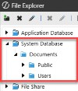 |
Manage File Share 001_SYS_MNG_FILESHARE | The Users with this role can edit these folders and files using File Explorer. | N/A 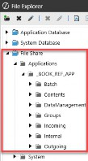 |
| System Security Role | Description | Pre-requisites / + Additions |
|---|---|---|
Manage File Share Contents 001_SYS_MNG_FILECONTENT | Exposes the Grants full rights to create, upload, download, and delete folders. | N/A 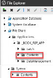 |
Access File Share Contents 001_SYS_ACC_FILECONTENT | Exposes the Allows only viewing the Contents folder and its files, and allows downloading. | N/A |
Retrieve File Share Contents 001_SYS_RET_FILECONTENT | The Contents folder is not exposed to the user in the File Share for Applications or System using the File Explorer. All files are accessible through the OneStream application, such as through dashboards and business rules. | N/A |
Encrypt System Business Rules Nobody | Allows a user to encrypt/decrypt a rule from the Business Rule screen in the System tab to obfuscate the contents of the rule from all users. | Nobody supersedes Administrators |
View All Logon Activity 001_SYS_VIEW_LOGON | Users can see the logon activity for all users in the environment. | + 001_SYS_SYSPANE + 001_SYS_LOGONPAGE |
View All Error Log 001_SYS_VIEW_ERROR | Users can see the error log for all users in the environment. | + 001_SYS_SYSPANE + 001_SYS_ERRORPAGE |
View All Task Activity 001_SYS_VIEW_TASK | Users can view the tasks and detailed child steps through the Task Activity icon in the toolbar. | + 001_SYS_SYSPANE + 001_SYS_TASKPAGE |
Manage System Security Users 001_SYS_MNG_USERS | Allows a user to create, modify, delete, and disable users Users with this role cannot create, modify, or delete • Add or remove themselves to or from groups or roles. • Delete themselves. • Add other users to Manage System Security privileges. • Add or remove groups they are members of from roles. | + 001_SYS_SYSPANE |
| System Security Role | Description | Pre-requisites / + Additions |
|---|---|---|
Manage System Security Groups 001_SYS_MNG_GROUPS | Allows a user to create, modify, copy, and delete groups and exclusion groups. You can also add or remove members and users to or from groups and exclusion groups. Users with this role cannot: • Modify the group. • Assign users to a group that establishes • Modify your membership in other groups. • Modify the parent group of a group that the user is a member of. | + 001_SYS_SYSPANE |
Manage System Security Roles 001_SYS_MNG_ROLES | Allows a user to manage system security roles. However, you cannot: • Modify the Manage System Security Role itself. • Assign the groups. • Add a group to the role of which you are a member. | + 001_SYS_SYSPANE |
Manage System Configuration 001_SYS_MNG_CONFIG | Allows a user to adjust system configurations. Note: native administrators will also need access to this group. | + 001_SYS_SYSPANE + 001_SYS_CONFIGPAGE |
Access as Non-Interactive User Nobody | Allows a user to create, revoke, and access PATs (Personal Access Tokens) for use in API calls. More information can be found in the Identity and Access Management Guide under OneStream’s support documentation online. | N/A |
Administer Non-Interactive User Nobody | Allows a user to revoke another user’s PATs and access information about all PATs related to API calls. More information can be found in the Identity and Access Management Guide. | N/A |
Manage Identity Providers 001_SYS_MNG_IP | Allows a user to manage identity providers and add, test, view, edit, and remove OIDC and SAML 2.0-compliant identity providers. | + 001_SYS_SYSPANE + 001_SYS_SICPAGE |
Figure 6.4
There are fewer (18) out-of-the-box system security roles in the table above than application security roles (35) covered in Chapter 5. This is because there are far fewer items a person would need access to from the System tab, and far fewer users needing to get to these roles at all.
| The second exception for users in the native Administrators group is that to change access to ancillary table security groups, the admin must also be added to the security group assigned to the Manage System Configuration. |
In Chapter 2, we discussed two exceptions to the native administrators group having full application access. One was noted in the prior chapter involving the Manage Data Group on the scenario, and the second is below.
Next, let us talk about the different pages to which a person can (or cannot) navigate within the System tab, which will go together with the system security roles above.
System Security › System Roles & Pages
System User Interface Roles
I like to think of system user interface roles simply as pages. While system security roles answer “Can I do X?”, system user interface roles answer “Can I get to X?” This is very similar to what we learned in Chapter 5 with application roles and pages.
You may want to allow some admin or IT users to view X, but you do not want to allow them to manage X. So while system roles and system pages can go hand-in-hand (meaning that if a person can do X, they will also need to get to X) they can also be separate in the case of allowing certain users to view but not manage X.
Therefore, as mentioned in Chapter 3, when applying security to both system security roles and system pages (001_SYS), you will want to use distinct groups for each so that you can separate the viewer from the doer.
Suppose you want to grant certain pages to subsets of users. In that case, you will set up corresponding security groups (001_SYS_XPAGE), assign the groups to those pages, and then nest these group(s) into your various admin or IT groups (000_GRP).
Once a user has access to reach a page, then additional layers of security (including the manage security roles discussed in the prior section) will apply that will determine what the person can see or do once they get to that page. Figure 6.5 lists all the system user interface roles and what access they will grant.
| System User Interface Role | Description of Access |
|---|---|
System Administration Logon 001_SYS_ADMINPAGE | Allows a user to log in to the System Administration only page upon logon, seen here: 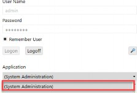 |
System Pane 001_SYS_SYSPANE | Allows access to the System tab, where other page access is defined as per additional system user interface roles: 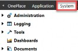 |
Application Admin Page 001_SYS_APPPAGE | Grants view only access to the following page: 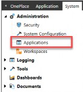 |
Security Admin Page 001_SYS_SECPAGE | Grants view only access to the following page: 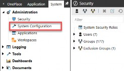 |
Smart Integration Connector Admin Page 001_SYS_SICPAGE | Grants access to this page: 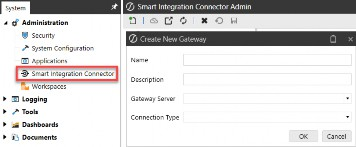 |
System Business Rules Page 001_SYS_BRPAGE | Grants access to the System Business Rules page for Extender BRs. Access to BRs once on this page is dependent on Access & Maintenance Groups for each BR: 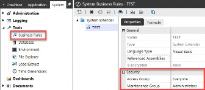 |
System Configuration Page 001_SYS_CONFIGPAGE | Grants view only access to the following page: 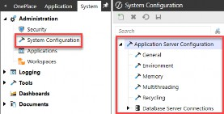 |
System Workspace Admin Page 001_SYS_WSPAGE | Grants access to the System Workspaces page. Access to dashboards once on this page is dependent on Access & Maintenance Groups for each dashboard maintenance unit: 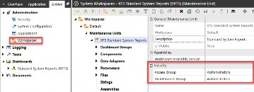 |
Database Page Administrators | Administrators, by default, have access to this page. This is under evaluation for future use. |
File Explorer Page 001_SYS_FILEPAGE | Grants access to the File Explorer page. Access to files and folders on this page is dependent on Access & Maintenance Groups for those items: 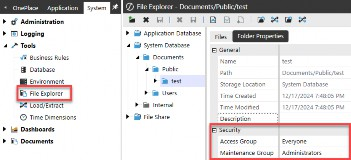 |
System Load Extract Page Administrators 001_SYS_LOADEXTRAC TPAGE | Grants access to the page below. Once on this page, a person’s ability to load or extract information will be determined by their additional System Security “Manage” Roles. For example, if a person does not have access to View All Task Activity, then that choice will be grayed out. As such, this system user interface role is typically limited to administrators. 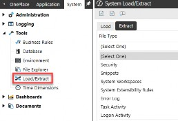 |
Environment Page 001_SYS_ENVPAGE | Grants access to the following page: 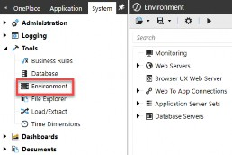 |
Error Log Page 001_SYS_ERRORPAGE | Grants access to the following page. A person will only see their own error log unless they have also been granted the View All Error Log security role. 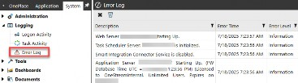 |
Logon Activity Page 001_SYS_LOGONPAGE | Grants access to the following page. A person will only see their own logon attempts unless they have also been granted the View All Logon Activity security role. You can view all users but cannot log them off. By default, only administrators have access to this section. 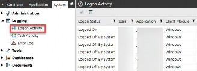 |
Task Activity Page 001_SYS_TASKPAGE | Grants view access to the following page. A person will only see their own tasks unless they have also been granted the View All Task Activity security role. 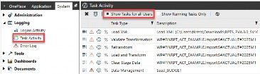 |
Time Dimension Page 001_SYS_TIMEDIMPAG E | Grants access to the following page: 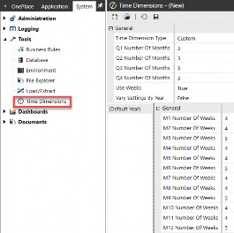 |
Figure 6.5
A common theme with system user interface roles is that they will allow a user to get to a specific application page; however, other security access will determine what that user can see and do once on that page.
As mentioned previously, of the 18 system security roles, over half (10) of them require additional page access via a corresponding system user interface role. This means if a person can do X, they will naturally also need to be able to navigate to X.
To bring all these out-of-the-box roles together, Figure 6.6 shows the correlation between system security roles (doer) and system user interface roles (viewer).
| System Security Role | + | System User Interface Role |
|---|---|---|
Administer System Workspace Assemblies 001_SYS_WSADMIN | + | System Pane 001_SYS_SYSPANE |
Manage System Workspaces 001_SYS_MNG_WS | + | System Pane 001_SYS_SYSPANE System Workspace Admin Page 001_SYS_WSPAGE |
View All Logon Activity 001_SYS_VIEW_LOGON | + | System Pane 001_SYS_SYSPANE Logon Activity Page 001_SYS_LOGONPAGE |
View All Error Log 001_SYS_VIEW_ERROR | + | System Pane 001_SYS_SYSPANE Error Log Page 001_SYS_ERRORPAGE |
View All Task Activity 001_SYS_VIEW_TASK | + | System Pane 001_SYS_SYSPANE Task Activity Page 001_SYS_TASKPAGE |
Manage System Security Users 001_SYS_MNG_USERS | + | System Pane 001_SYS_SYSPANE |
Manage System Security Groups 001_SYS_MNG_GROUPS | + | System Pane 001_SYS_SYSPANE |
Manage System Security Roles 001_SYS_MNG_ROLES | + | System Pane 001_SYS_SYSPANE |
Manage System Configuration 001_SYS_MNG_CONFIG | + | System Pane 001_SYS_SYSPANE System Configuration Page 001_SYS_CONFIGPAGE |
Manage Identity Providers 001_SYS_MNG_IP | + | Smart Integration Connector Admin Page 001_SYS_SICPAGE |
Figure 6.6
Now that we have discussed the out-of-the-box system security roles and pages, let us discuss which ones of these – if any – you may want to allow your end-users to access.
As a general rule of thumb, basic end-users of OneStream will not need to access the System tab. The types of activities found on this tab span the entire environment and are not limited to just one application. So, if you are taking the “less is more approach”, you may not grant the majority of your end-users access to get to the System tab.
But as with everything, there are exceptions. Circling back to the pin we placed in Figure 6.1, in some cases, you may want to grant users the ability to see the Logging activities on the System tab. These activities are shown in Figure 6.7.
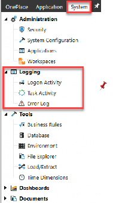
Figure 6.7
If this is the case, remember the concepts discussed in Chapters 2 and 3. You will create a user group (000_GRP_LOGACTIVITY), place users into that group, and then embed the appropriate 001_SYS security roles and pages into this group, as shown in Figure 6.8.
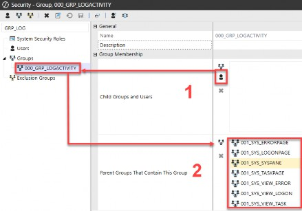
Figure 6.8
System Security
System Objects
After granting system security roles and system user interface roles (001_SYS), the next step is to determine how to secure the other limited number of objects that appear on the System tab. Unlike with application objects, of which we said there are almost a limitless number of application objects grouped into 13 categories, the same is not true for system objects.
System objects fall into three categories:
System Security › System Objects
1. Business Rules
Workspaces / Dashboards (maintenance units & profiles)
Explorer (files & folders)
Everything else on the System tab is a page that allows you to review or manage certain items, but these three categories of objects – as shown in Figure 6.9 – are pages that themselves can contain a limitless number of individual objects. If desired, you can secure them individually.
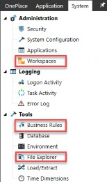
Figure 6.9
There are two security groups associated with securing these three sets of system objects: Access and Maintenance, as shown in Figure 6.10. If you are taking the “less is more” or simpler approach to your system security, you may control their access by limiting who can get to these three pages via their system user interface roles, discussed earlier in this chapter.
But if you need to limit security further, you can secure individual sets of business rules, dashboards, or files and folders on these system pages via their access or maintenance groups.
| Access | Maintenance | |
| Business Rules | Yes | Yes |
| Workspace / Dashboard Profiles | Yes | Yes |
| Explorer Files & Folders | Yes | Yes |
Figure 6.10
System Security
System Tables
So, where are all these system objects stored? They are stored in the system database discussed earlier in this chapter, which is accessed from the System > Tools > Database page.
There are approximately 80 out-of-the-box tables in any given framework database. That number will grow if any Solution Exchange tools or custom tables have been added to the framework database. Any additional tables will also appear on the
System Database page, as shown in Figure 6.11.
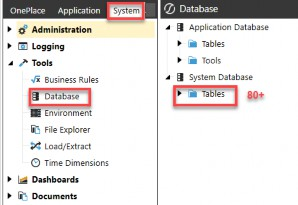
Figure 6.11
These 80+ system tables consist of tables for the following types of items:
Audit Tables
System Objects Tables
Security Group & User Tables
Server Configuration Tables
Custom or Solution Exchange Tables (e.g., OSD tables)
The most important tables within the system tables are those that contain your security groups and users. The security group tables form a direct link between the framework database and your application database. As we discussed in Chapter 5, it is the unique ID associated with each security group that is the ID that is stored within all tables in your application database.
In the next section, let us explore your security group and user tables in more detail.
System Security › System Tables
Security Group Tables
As we learned in Chapter 5, every application table with security groups will maintain those groups by a unique ID in the application database rather than the security group name. Figure 6.12 shows an example of this from the Cube View Group application table, where we can see a unique ID for the Access Group Unique ID and the Maintenance Group Unique ID.
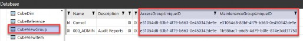
Figure 6.12
The link between our application tables, such as the Cube View group table above, and the system framework tables is, therefore, the unique ID (as shown by the first set of arrows in Figure 6.13).
By creating that first link based on the unique ID from the application tables (e.g., the CubeViewGroup table) to the SecGroup (or SecExclGroup) system table, we can pull back the security group name, which is what is recognizable to everyone in OneStream.
Then, if you need to dive deeper into nested security groups, you can make the second link, again based on the unique ID, to go from the SecGroup (or SecExclGroup) table to the SecGroupChild (or SecExclGroupChild) table, all contained within the framework database.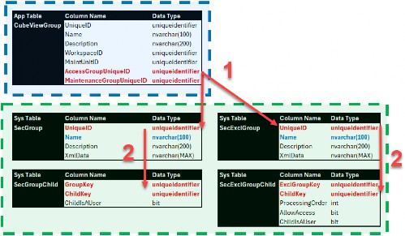
Figure 6.13
What is key to understanding all of this is that the link between application tables containing application object security, and the system security tables is all based on the unique identifier being the security group ID. To get a list of security groups attached to application objects by security group name, you have to make this link.
The other key thing to remember is that Azure will not natively let you run SQL against two databases (application and framework). That is a native Azure restriction. Therefore, to run queries against both databases, you will have to do so via a business rule, whereby you open two separate database connections and join tables within the construct of that business rule.
System Security › System Tables
Security User Tables
While security groups are only stored in the application tables as unique IDs, the same is not true for users within the application audit tables. There are approximately 75 application audit tables that store “who did what when” within an application by the user name, as opposed to a unique ID.
Why is this relevant? This makes querying and presenting reports displaying audit actions inside of OneStream easier than presenting a report that displays what security group is attached to which application object. This is because you do not need to query across the application database tables and system database (e.g., framework) tables. All audit tables are self-contained within the application database only.
Because the audit tables store “who did what when” by the user name (e.g., AuditUser column in the application audit tables) as opposed to a unique user ID, there is no need to join tables across databases. An example of this is shown in Figure 6.14, where the AuditAppProperty table is displayed with the user name presented in the AuditUser column.
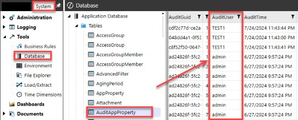
Figure 6.14
There is a consequence of audit tables storing the user name as opposed to the unique ID. This was discussed in Chapter 2 when we talked about deleting versus disabling a user. If you delete a user, that user name is available to be used again.
And because the audit tables store “who did what when” by user name (and not a unique ID), that means you can set up a user with the same name as before, and it will appear as if that new user took action in the audit tables which – in fact – could have been actions taken by the previous, not current, user.
We touched upon this in the prior chapter and will revisit it in Chapter 8 when we talk about the security audit reports and how you can use all the reports together to audit user actions properly.
Ancillary Tables
In this chapter and the prior chapter, we have covered all the out-of-the-box or standard application and system tables. These tables are found in every customer application and environment and cannot be edited or altered as they are fundamental to OneStream functionality.
So, what about any custom tables you created in your OneStream application? Or tables that are installed as part of the Solution Exchange tools? Those are considered ancillary tables in OneStream. They are additional database tables (either within the application or framework database) that can be created and edited to support various customizations and additional functionality with OneStream.
These tables can be key to supporting your OneStream applications and functionality, but access to these tables is not automatic because they are custom additions to your out-of-the-box application and framework tables.
Granting access to ancillary tables is important because it allows users to view, edit, and maintain the data within these tables. You can grant security to these ancillary tables by going to the System tab > System Configuration Page > OneStream Database Server, as shown in Figure 6.15.
Do not forget the exception we mentioned earlier in that, whatever security group you have assigned to the Manage System Configuration role, the user will also need to be in that group to reach the screen in Figure 6.15, even native Administrators!
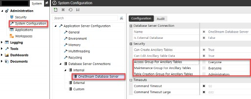
Figure 6.15 The three security groups I want to highlight are:
Access Group for Ancillary Tables
Maintenance Group for Ancillary Tables
Table Creation Group for Ancillary Tables
First, the only people who should be allowed to create custom tables will typically be your native administrators group. This is the group that can create custom tables to support functionality within your application, or the group that can download, load, and use “setup tables” functionality for Solution Exchange tools.
As a rule of thumb, I suggest setting the Access to Ancillary Tables and Maintenance to Ancillary Tables to Everyone. This will allow users to get to, and interact with, any custom or Solution Exchange tools. Their workflow security will further control access to Solution Exchange tools. |
The other two groups for access and maintenance will be needed by users requiring access and/or interactions with any Solution Exchange tools. Think of Account Reconciliations (XFW_RCM tables) or People Planning (XFW_PLP tables) in which you will have users who will need to view and make changes within these solutions.
Now that we have covered how and what you can secure on the System tab, let us delve into the final piece of system security: security APIs (Application Programming Interfaces). Admit it, you might have heard about APIs but never knew what that acronym means until now, right?
System Security
Security APIs
An API, or Application Programming Interface, is a set of rules that allows software applications to communicate with each other. APIs are used to share data, functionality, and services between applications, systems, and devices.
Figure 6.16 shows all the security APIs currently available in OneStream.
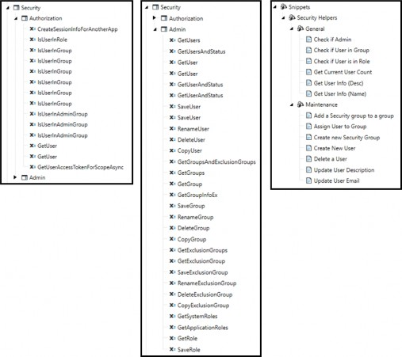
Figure 6.16
The BRApi.Security.Authorization functions are listed in Figure 6.17 below.
| FUNCTION | EXAMPLE |
|---|---|
Create Session Info For Another App | Dim si As SessionInfo = BRApi.Security.Authorization.CreateSessionInfoForAnotherApp(siSource, appName, openAppResult) |
| Is User In Role | Dim bValue As Boolean = BRApi.Security.Authorization.IsUserInRole(si, roleTypeId) |
| Is User In Group | Dim bValue As Boolean = BRApi.Security.Authorization.IsUserInGroup(si, groupName) |
| Dim bValue As Boolean = BRApi.Security.Authorization.IsUserInGroup(si, groupID) | |
| Dim bValue As Boolean = BRApi.Security.Authorization.IsUserInGroup(si, userName, groupName, allowAccessIfInAdministratorsGroup) | |
| Dim bValue As Boolean = BRApi.Security.Authorization.IsUserInGroup(si, userID, groupName, allowAccessIfInAdministratorsGroup) | |
| Dim bValue As Boolean = BRApi.Security.Authorization.IsUserInGroup(si, userName, groupID, allowAccessIfInAdministratorsGroup) | |
| Dim bValue As Boolean = BRApi.Security.Authorization.IsUserInGroup(si, userID, groupID, allowAccessIfInAdministratorsGroup) | |
| Is User In Admin Group | Dim bValue As Boolean = BRApi.Security.Authorization.IsUserInAdminGroup(si) |
| Dim bValue As Boolean = BRApi.Security.Authorization.IsUserInAdminGroup(si, userName) | |
| Dim bValue As Boolean = BRApi.Security.Authorization.IsUserInAdminGroup(si, userID) | |
| Get User | Dim objUserInfo As UserInfo = BRApi.Security.Authorization.GetUser(si, userName) |
| Dim objUserInfo As UserInfo = BRApi.Security.Authorization.GetUser(si, userID) | |
| Get User Access Token For Scope Async | Dim objSystem.Threading.Tasks.Task`1[[OneStream.Shared.Wcf.OISAccessToken, OneStream.SharedWcfContract, Version=1.0.0.0, Culture=neutral, PublicKeyToken=null]] As System.Threading.Tasks.Task`1[[OneStream.Shared.Wcf.OISAccessToken, OneStream.SharedWcfContract, Version=1.0.0.0, Culture=neutral, PublicKeyToken=null]] = BRApi.Security.Authorization.GetUserAccessTokenForScopeAsync(si, scopes) |
Figure 6.17
The BRApi.Security.Admin functions are listed in Figure 6.18 below.
| FUNCTION | EXAMPLE |
|---|---|
| Copy Exclusion Group | BRApi.Security.Admin.CopyExclusionGroup(si, uniqueID, newName, copyListOfChildPrincipals) |
| Copy Group | BRApi.Security.Admin.CopyGroup(si, uniqueID, newName, copyListOfChildPrincipals, copyListOfParentGroups) |
| Copy User | BRApi.Security.Admin.CopyUser(si, uniqueID, newName, copyListOfParentGroups) |
Delete Exclusion Group | BRApi.Security.Admin.DeleteExclusionGroup(si, exclusionGroupName) |
| Delete Group | BRApi.Security.Admin.DeleteGroup(si, groupName) |
| Delete User | BRApi.Security.Admin.DeleteUser(si, userName) |
Get Application Roles | objList = BRApi.Security.Admin.GetApplicationRoles(si) |
| Get Exclusion Group | Dim objExclusionGroupInfo As ExclusionGroupInfo = BRApi.Security.Admin.GetExclusionGroup(si, exclusionGroupName) |
| objList = BRApi.Security.Admin.GetExclusionGroups(si) | |
| Get Group | Dim objGroupInfo As GroupInfo = BRApi.Security.Admin.GetGroup(si, groupName) |
Get Group Info Ex | Dim objGroupInfoEx As GroupInfoEx = BRApi.Security.Admin.GetGroupInfoEx(si, uniqueID) |
| Get Groups | objList = BRApi.Security.Admin.GetGroups(si) |
Get Groups And Exclusion Groups | objList = BRApi.Security.Admin.GetGroupsAndExclusionGroups(si) |
| Get Role | Dim objRoleInfo As RoleInfo = BRApi.Security.Admin.GetRole(si, roleName) |
Get System Roles | objList = BRApi.Security.Admin.GetSystemRoles(si) |
| Get User | Dim objUserInfo As UserInfo = BRApi.Security.Admin.GetUser(si, userName) |
| Dim objUserInfo As UserInfo = BRApi.Security.Admin.GetUser(si, userID) | |
| objList = BRApi.Security.Admin.GetUsers(si) | |
| Get User And Status | Dim objUserInfoAndStatus As UserInfoAndStatus = BRApi.Security.Admin.GetUserAndStatus(si, userName) |
| Dim objUserInfoAndStatus As UserInfoAndStatus = BRApi.Security.Admin.GetUserAndStatus(si, userID) | |
| objList = BRApi.Security.Admin.GetUsersAndStatus(si) | |
Rename Exclusion Group | BRApi.Security.Admin.RenameExclusionGroup(si, uniqueID, newName) |
| Rename Group | BRApi.Security.Admin.RenameGroup(si, uniqueID, newName) |
| Rename User | BRApi.Security.Admin.RenameUser(si, uniqueID, newName) |
Save Exclusion Group | BRApi.Security.Admin.SaveExclusionGroup(si, exclusiongroupInfo, isNew) |
| Save Group | BRApi.Security.Admin.SaveGroup(si, groupInfo, updateListOfParentGroups, parentGroupIDs, isNew) |
| Save Role | BRApi.Security.Admin.SaveRole(si, role) |
| Save User | BRApi.Security.Admin.SaveUser(si, user, updateListOfParentGroups, parentGroupIDs, isNew) |
| BRApi.Security.Admin.SaveUser(si, user, newInternalProviderPW, updateListOfParentGroups, parentGroupIDs, isNew) |
Figure 6.18
Below, in Figure 6.19, are some snippet examples.
| SNIPPET | EXAMPLE |
|---|---|
| Check if Admin | 'Check to see if the current user is an administrator (Returns True/False) Dim userIsAdmin As Boolean = BRApi.Security.Authorization.IsUserInAdminGroup(si) |
| Check if User in Group | 'Check to see if the current user is in a specified security group (Returns True/False) Dim secGroup As String = "Everyone" '<--Enter name Of the security Group To test for current user Dim isUserInGroup As Boolean = BRApi.Security.Authorization.IsUserInGroup(si, secGroup) |
| Check if User in Role | 'Check to see if the current user is in a specified security role (Returns True/False) Dim roleTypeID As onestream.Shared.Wcf.RoleTypeId = onestream.Shared.Wcf.RoleTypeId.ManageData '<-- Specify the RoleTypeID to test Dim isUserInRole As Boolean = BRApi.Security.Authorization.IsUserInRole(si, roleTypeID) |
| Get Current User Count | 'Get current security user count (Returns datatable) Dim isEnabled As Integer = 1 '<- specify if disabled users should be included in the count (True = 1, False = 0) Dim intUserCount As Integer = 0 'Define SQL Query Dim sql As New Text.StringBuilder sql.AppendLine("Select COUNT([Name]) as UserCount ") sql.AppendLine("From [SecUser] ") sql.AppendLine("Where IsEnabled = " & isEnabled) 'Execute Query on App DB Using dbConnFw As DBConnInfo = BRApi.Database.CreateFrameworkDbConnInfo(si) Dim dtCount As DataTable = BRAPi.Database.ExecuteSql(dbConnFw, sql.ToString, True) If Not dtCount Is Nothing Then For Each row As DataRow In dtCount.Rows intUserCount = row("UserCount") Next End If End Using |
| Get User Info (Desc) | 'Get current user description Dim userDesc As String = String.Empty Dim objUser As UserInfo = BRApi.Security.Authorization.GetUser(si, si.AuthToken.UserName) If Not objUser Is Nothing Then userDesc = objUser.User.Description End If |
| Get User Info (Name) | 'Get current user name Dim userName As String = si.AuthToken.UserName |
| Add a Security Group to a Group | 'Add a group to another group. Dim groupAddingTo As String = "Administrators" Dim groupBeingAdded As String = "Test Group" 'Add a group to another group. Dim objGroup1Info As GroupInfo = BRApi.Security.Admin.GetGroup(si, groupAddingTo) Dim objGroup2Info As GroupInfo = BRApi.Security.Admin.GetGroup(si, groupBeingAdded) If Not objGroup1Info Is Nothing And Not objGroup2Info Is Nothing Then Dim objOtherGroupInfoEx As GroupInfoEx = BRApi.Security.Admin.GetGroupInfoEx(si, objGroup2Info.Group.UniqueID) If Not objOtherGroupInfoEx Is Nothing Then If (Not objOtherGroupInfoEx.ParentGroups.ContainsKey(objGroup1Info.Group.UniqueID)) Then Dim parentGroupIDs As List(Of Guid) = objOtherGroupInfoEx.ParentGroups.Keys.ToList() parentGroupIDs.Add(objGroup1Info.Group.UniqueID) BRApi.Security.Admin.SaveGroup(si, objGroup2Info, True, parentGroupIDs, TriStateBool.Unknown) End If End If End If |
| Assign User to Group | 'Get Group Info Dim secGroupName As String = "Administrators" 'User Info Dim userName As String = "TestUser1" 'Get a Group And UserInfo Object And add the Group To the user's list of parent groups. Dim objGroupInfo As GroupInfo = BRApi.Security.Admin.GetGroup(si, secGroupName) If Not objGroupInfo Is Nothing Then Dim objUserInfo As UserInfo = BRApi.Security.Admin.GetUser(si, userName) If Not objUserInfo Is Nothing Then If (Not objUserInfo.ParentGroups.ContainsKey(objGroupInfo.Group.UniqueID)) Then Dim parentGroupIDs As List(Of Guid) = objUserInfo.ParentGroups.Keys.ToList() parentGroupIDs.Add(objGroupInfo.Group.UniqueID) BRApi.Security.Admin.SaveUser(si, objUserInfo.User, True, parentGroupIDs, TriStateBool.Unknown) End If End If End If |
| Create New Security Group | 'Get Group Info Dim newGroupName As String = "Test Group" 'Create a New Group Dim objGroup As Group = New Group() objGroup.Name = newGroupName Dim objGroupInfo As GroupInfo = New GroupInfo() objGroupInfo.Group = objGroup BRApi.Security.Admin.SaveGroup(si, objGroupInfo, False, Nothing, TriStateBool.Unknown) |
| Create New User | 'Get User Info Dim newUserName As String = "TestUser1" Dim newUserDesc As String = "Test User 1" Dim newUserText1 As String = "User Text" 'Create a New user Dim objUser As User = New User() objUser.Name = newUserName objUser.Description = newUserDesc objUser.Text1 = newUserText1 BRApi.Security.Admin.SaveUser(si, objUser, False, Nothing, TriStateBool.Unknown) |
| Delete a User | Get User Info Dim userToDelete As String = "TestUser1" 'Delete user BRApi.Security.Admin.DeleteUser(si, userToDelete) |
| Update User Description | 'Get a UserInfo Object And change the user's description. Dim userToUpdate As String = "TestUser" '<--Enter user name to update Dim updatedDescription As String = "User Description" '<-- Enter new user description Dim objUserInfo As UserInfo = BRApi.Security.Admin.GetUser(si, userToUpdate) If Not objUserInfo Is Nothing Then objUserInfo.User.Description = updatedDescription BRApi.Security.Admin.SaveUser(si, objUserInfo.User, False, Nothing, TriStateBool.Unknown) End If |
| Update User Email | 'Get a UserInfo Object And change the user's email address Dim userToUpdate As String = "TestUser" '<--Enter user name to update Dim updatedEmail As String = "UserEmailAddress@provider.com" '<-- Enter user email address Dim objUserInfo As UserInfo = BRApi.Security.Admin.GetUser(si, userToUpdate) If Not objUserInfo Is Nothing Then objUserInfo.User.Email = updatedEmail BRApi.Security.Admin.SaveUser(si, objUserInfo.User, False, Nothing, TriStateBool.Unknown) End If |
Figure 6.19
At this point, we have covered the foundational building blocks to security and your end-user experience in OneStream: the framework and environment (Chapter 2), design concepts and naming conventions (Chapter 3), common roles (Chapter 4) and took a deep dive into the application (Chapter 5) and framework (aka system) databases in this chapter.
In the remaining two chapters, let us turn our attention to some equally important security concepts that are most relevant to OneStream administrators. In Chapter 7, we will cover slice security, No Input BRs, and some common Solution Exchange tools and their security.
We will end with all the things administrators will want to understand about reporting, testing, maintaining, migrating and auditing security.